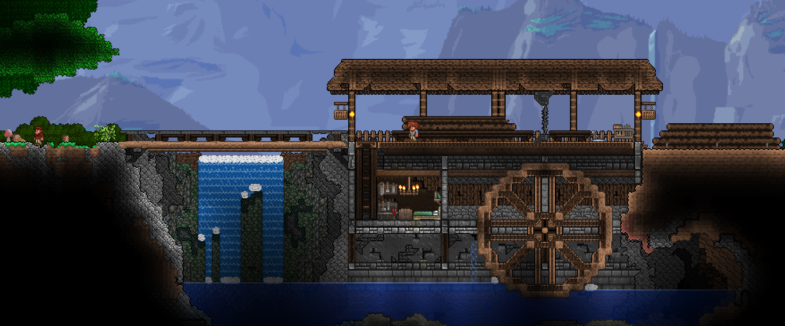
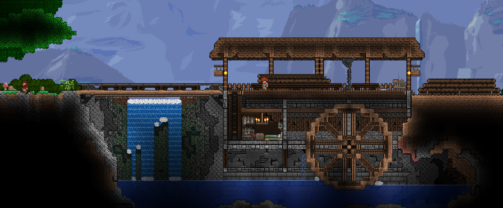

If you aren't aware, Terraria is a PC, Console and Mobile game developed by Re-Logic and is the #9 best selling computer game of all time. It describes itself as a "classic action game with the freedom of sandbox-style creativity". I've been involved in the community for a while now, and as such have been involved in a number of different projects.
Super Terraria World was an ambitious project aiming to build an MMORPG mod for Terraria, essentially rebuilding the networking logic for the game. It was largely successful; pretty much all the features for an MMO were implemented and while it ran there was a consistent player-base who enjoyed the mod, and enough crowd support to easily cover server and some development costs. Sadly the work to port the mod to new versions of the games ended up overtaking the time that the team had, so we were forced to move on to new projects; me and Flippi started work on Vingar, and Khaios went all in on his YouTube channel.

Terraria Beta Testing
Since 2017, I've been lucky enough to be one of a small number of people who're given access to early versions the Terraria updates by Re-Logic to help with testing. I really enjoy working with the developers and other testers to find bugs and complete our now numerous runs through the game in order to provide feedback on new features and balance changes. I've even managed to get something of myself into the game; two paintings; Uluru & Outcast and there's a chance for some of the in game town pets are named after my own real life pets. There are also some cool special lighting effects when using certain weapons with a character named 'darthmorf'. They've been very kind, and sent me all sorts of merchandise throughout the years, my favourite being a solid steel real life version of the 'Meowmere' sword.Super Terraria World was an ambitious project aiming to build an MMORPG mod for Terraria, essentially rebuilding the networking logic for the game. It was largely successful; pretty much all the features for an MMO were implemented and while it ran there was a consistent player-base who enjoyed the mod, and enough crowd support to easily cover server and some development costs. Sadly the work to port the mod to new versions of the games ended up overtaking the time that the team had, so we were forced to move on to new projects; me and Flippi started work on Vingar, and Khaios went all in on his YouTube channel.
